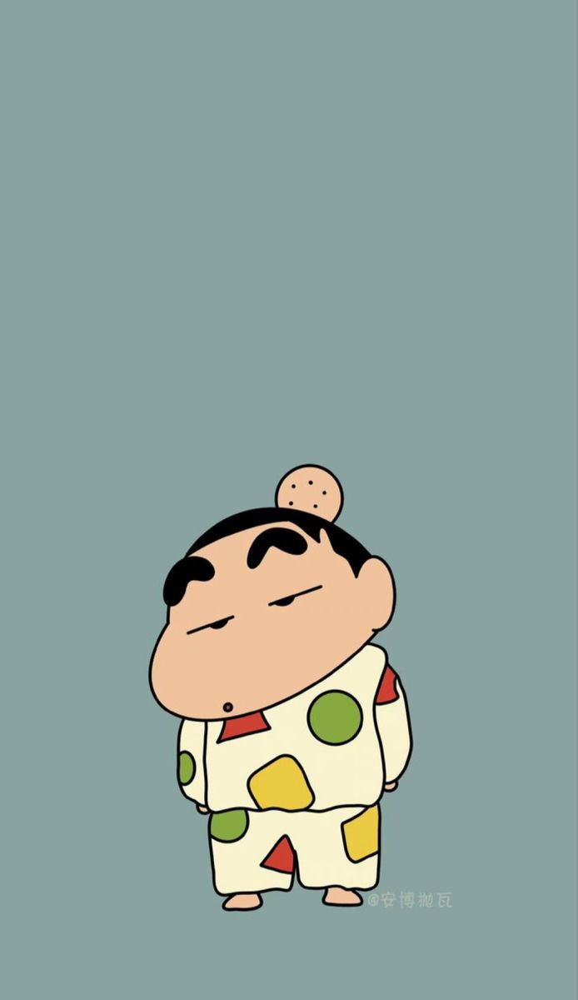

劇情介紹
蠟筆小新（クレヨンしんちゃん）是由日本漫畫家臼井儀人創作的漫畫作品，最初連載於1990年的《周刊漫畫ACTION》雜誌。該作品以其幽默、搞笑且富有生活氣息的內容迅速獲得廣泛人氣，後來改編成動畫、電影及多種衍生作品，成為日本國民級的動漫IP之一。
故事以5歲的野原新之助（小新）為主角，圍繞他的家庭、朋友及日常生活展開。劇情多以輕鬆搞笑的方式呈現，結合了孩子的天真與大人的幽默，描繪出生活中平凡而有趣的瞬間。
動畫版自1992年首播，至今已播出數千集，並且每年推出一部劇場版電影。劇場版通常比電視動畫更注重冒險情節，並融入更多感人元素，深受各年齡層觀眾喜愛。
野原新之助（小新）： 故事的主人公，一名聰明又愛惡作劇的5歲男孩，經常因為搞笑或尷尬的言行讓身邊的人哭笑不得。他最喜歡美少女和吃甜甜圈。
野原美冴： 小新的媽媽，家中的全職主婦。性格堅強，但經常被小新的行為氣得抓狂。
野原廣志： 小新的爸爸，普通的上班族。常因家庭開銷和自己體味（腳臭）被調侃。
野原向日葵： 小新的妹妹，天真可愛，但偶爾會表現出超齡的行為。
小新的朋友們： 包括風間徹、櫻田妮妮、阿呆和正男，他們一起在幼稚園創造許多爆笑故事。